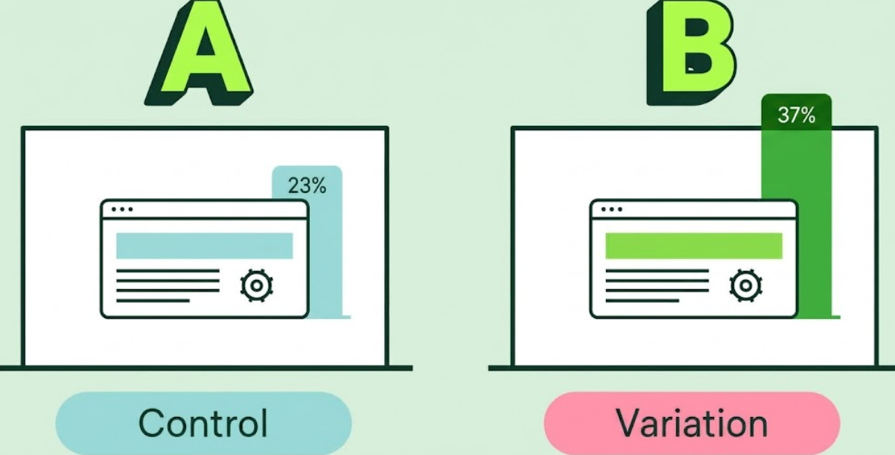
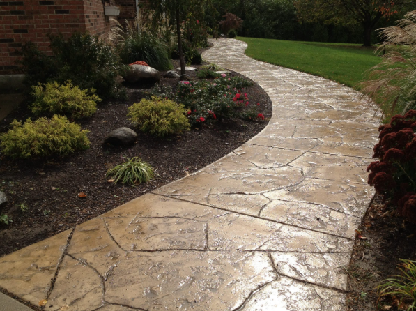
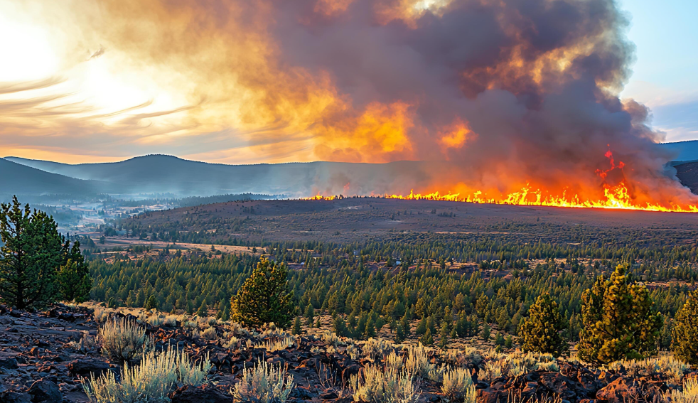

Washington University in St. Louis
Master of Engineering in Data Analytics and Statistics
I’m Walter Yuan, a graduate student at WashU.
I work with data, experiments, and applied AI to turn practical questions into clear answers.
I’m studying engineering data analytics and statistics at WashU. My work brings together statistical thinking, machine learning, experimentation, and data visualization.
I’m drawn to questions with a real-world edge: how people use a product, how operations can run more smoothly, or whether an early warning signal gives decision-makers useful time.
My academic background and internship work.
Master of Engineering in Data Analytics and Statistics
Bachelor of Science in Data Science
Introduction to Data Science, Probability, Statistics for Data Science I, Data Mining, Introduction to Data Wrangling, Introduction to Machine Learning and Pattern Classification.
Bachelor of Science in Mathematics
Scientific Computing, Calculus Physics, Combinatorics & Graph Theory, Imperative Problem Solving, Multivariate Calculus, Modern Differential Equations, Data Visualization, Linear Algebra.
Data Engineer / Data Analyst
Choose a role to see the relevant projects.
Built a small analytics workflow joining historical trip patterns with live station snapshots, then surfaced inventory signals in a dashboard. Heuristic station mapping and sampling limits are documented.
Built a stateful LangGraph workflow for job matching, career questions, and human handoff. Used RAG to ground answers in job postings and study/employment documents, exposed data through MCP tools, and designed reusable skills with harness guardrails, retries, and observability.
Developed an interactive Three.js experience through iterative collaboration with an AI coding assistant. Diagnosed a backface-culling defect through visual and numerical checks, then redesigned the terrain from a radial island to a coastal layout for clearer, more realistic scenery.

Analyzed marketing campaign and landing-page A/B tests using conversion rate as the outcome. Cleaned 8,000+ interaction records, compared variants with a two-sample hypothesis test, and visualized the results to guide acquisition decisions.
Combined wine data with SQL and cleaned it in Python, including missing values and feature scaling. Explored relationships between wine ratings, alcohol, and acidity, then compared five classification models. SVM achieved the highest accuracy at approximately 75%.

Explored concrete composition and compressive strength, using log transformations to address skewness. Built univariate and multivariate linear regression models and used statistical tests to examine relationships between material composition, age, and strength.
Explored distributions, correlations, and multicollinearity across 13 housing attributes. Cleaned and normalized features, compared Linear Regression, Ridge, Lasso, and Random Forest, and evaluated models with cross-validation, R², and RMSE. Visualized predictions and feature importance.

Defined a cell-day target for fires discovered in the next three days, checked the study panel, and set up time-based evaluation against a seasonal baseline. Predictive performance still needs validation.
I choose tools to fit the problem, from a quick experiment readout to a repeatable data workflow.
I like getting outside, seeing new places, and finding a good spot to watch the sunset.
A few moments worth keeping.
I’m interested in data analytics, product insights, and applied AI opportunities.
yuanhaoxuan27@gmail.com